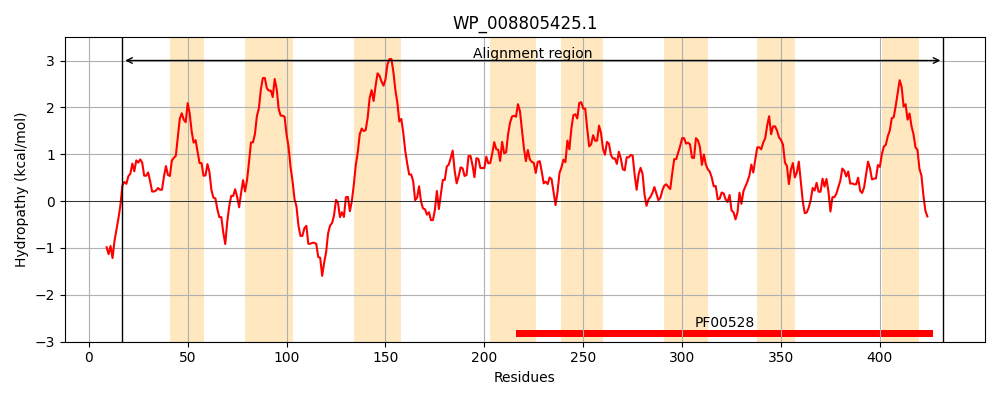
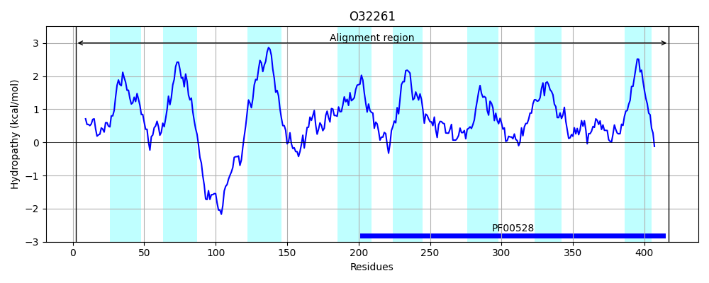
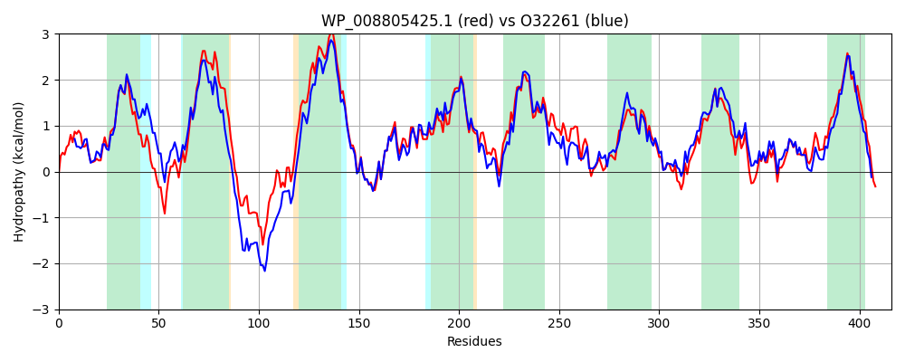

Hit Accession: O32261
Hit TCID: 3.A.1.1.2
Hit Description: gnl|BL_ORD_ID|7104 gnl|TC-DB|O32261|3.A.1.1.2 Putative arabinogalactan oligomer transport system permease protein ganP OS=Bacillus subtilis GN=ganP PE=3 SV=1
Mach Len: 416
e:0.000000
Query TMS Count : 8
Hit TMS Count: 8
TMS-Overlap Score: 8.550000
Predicted Substrates:CHEBI:24151;galactooligosaccharide
BLAST Alignment:
Score: 1572 , Bit scores: 610 bits, E-value: 0.0e+00, Alignment length: 416, Percentage identity: 67
Query: 17 RHAWCGLLLAIVPGFGQFYHRQWLKGLVFLVLLSSFLGIFYDFLREGLWGLYTLGEEVPRDNSIFLLAEGIISVLIVAFGVLIYFLSLRDAWLNGKKRDEGIALNSVRKQYQMLLSDGFPYLMITPGFILLVFVVIFPILFGFAIAFTNYNLYHTPPAKLVDWVGLKNFVNIFTLSIWRSTFLDVLQWTVVWTLLATTLQCTVGVLLAILVNQKDLRFKPLIRTIFILPWAVPGFVTILVFAGMFNDSFGVINNAILSFFGISPKAWLTDPFWTKTALIMMQTWLGFPFVFAMTTGVLQAIPDDLYEAATMDGASAFTRLRTITLPLVLYAIAPIIITQYTFNFNNFNIIYLFNNGGPAVAGSNAGGTDILVSWIYKLTMSSSQYAIAATITILLSIFVVGLALWQFRATKSFKND 432
+H LLL+I+PG GQFY++QW+KG+VFL L +SF +F D L G WG++TLG EVPRDNS+FLLAEGII+V++ FG+ +Y+++LRDA+ +GK+RDE L+S+++QYQ ++S+G+PY++ P +L+F VIFPILF FA+AFTNY+LYH+PPAKL+DWVG + F NIFT+ IWRSTF DVL WTVVWTL A+TLQ T+G+ LAI+VNQKDLRFK RTI ILPWAVPGFVTIL+FAG+FNDSFG +N+ IL+FFGI P W+TD W++ ALI+MQ WLGFP++F ++TGVLQ+IPDDLYEAAT+DGAS F++LR ITLP+V A+APIIITQ+TFNFNNFNIIYLFN GGPAV GS AGGTDILVSWIYKLTM SSQY++AA +TILLS+FV+ +ALWQFR TKSFK +
Sbjct: 2 QHRQVALLLSIIPGLGQFYNKQWIKGIVFLFLGASFFAVFGDLLNMGFWGIFTLGTEVPRDNSVFLLAEGIIAVIVTCFGLAVYYVNLRDAFQSGKQRDENKPLSSLKEQYQHIISEGYPYVVSGPSLFILIFAVIFPILFSFALAFTNYDLYHSPPAKLIDWVGFQTFANIFTVDIWRSTFFDVLAWTVVWTLAASTLQVTLGIFLAIIVNQKDLRFKRFFRTILILPWAVPGFVTILIFAGLFNDSFGAMNHDILAFFGIDPLPWMTDANWSRLALILMQGWLGFPYIFLVSTGVLQSIPDDLYEAATIDGASVFSKLRYITLPMVFIAMAPIIITQFTFNFNNFNIIYLFNGGGPAVTGSTAGGTDILVSWIYKLTMQSSQYSLAAALTILLSVFVISIALWQFRQTKSFKEE 417 | Protein Hydropathy Plots: |
|---|
|  |  |
Pairwise Alignment-Hydropathy Plot:
|
|---|
|  |